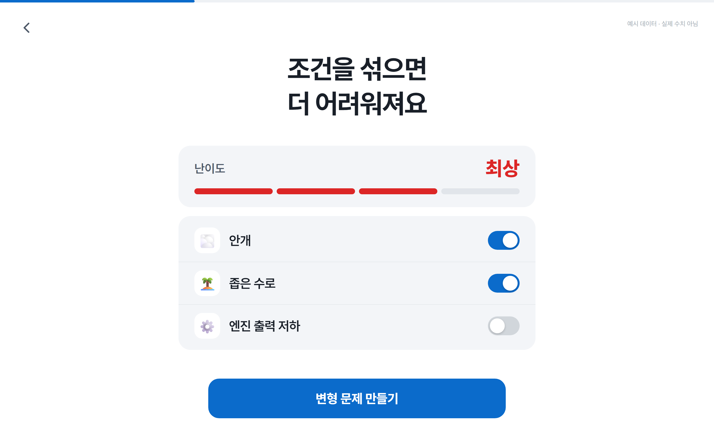
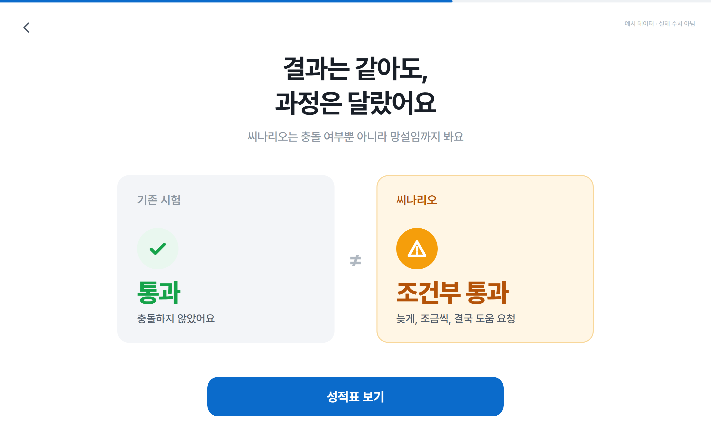
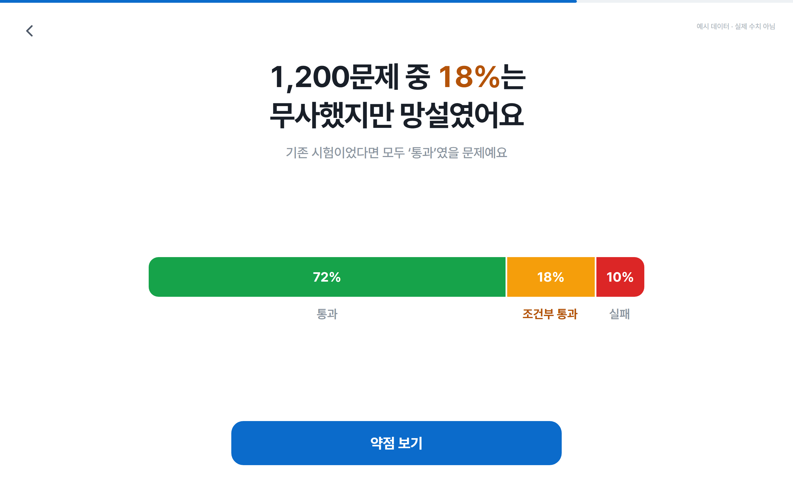
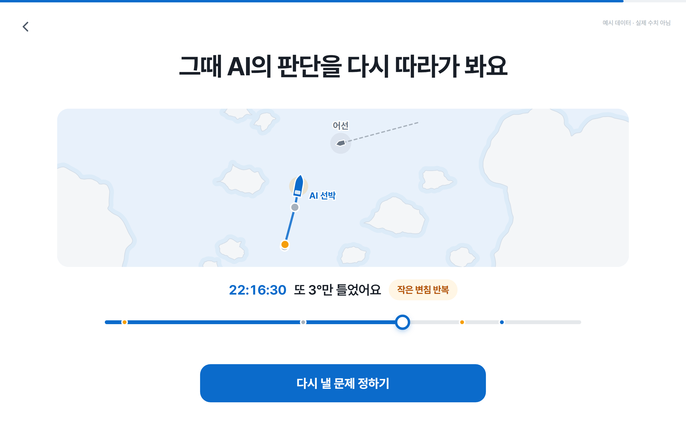

서비스 데모
예시 데이터로 그린 화면입니다. 화면 속 수치는 실제 값이 아닙니다.
인터랙티브 데모 열기 → 키 또는 스페이스로 진행
① 출제
실제 항적에서 위험 순간을 찾고, 조건을 섞어 난이도를 올린 변형 문제를 만듭니다.

② 시험
충돌이 없으면 기존 시험은 통과. 씨나리오는 사람 항해사보다 늦고 작게 피한 망설임까지 보고 조건부 통과로 잡아냅니다.

③ 성적표
어느 시뮬레이터에서든 같은 성적표. 과목별 결과와 약점 지도를 보여 줍니다.

④ 오답노트
판단 기록에서 망설인 순간을 표시하고, 상황을 재현해 다시 문제로 냅니다.
